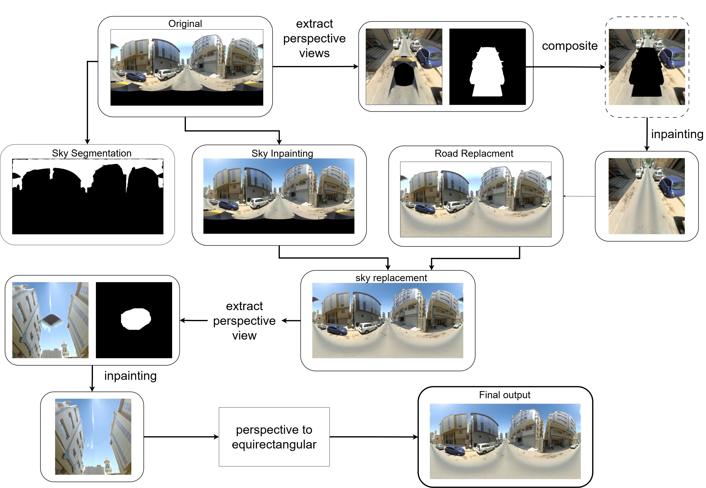

Panoramic Image Editing & Reconstruction Pipeline
![]()
Panoramic Image Editing & Reconstruction
Over the past month, I have been building a pipeline for editing panoramic (360° equirectangular) imagery, with a focus on object removal, more specifically - inpainting, and reconstruction back into equirectangular format.
 > original equirectangular image with artifacts in car and sky glare
> original equirectangular image with artifacts in car and sky glare
My task in this fun project was to remove artifacts (a car captured in the 360-degree view and sky glare) from the scene. The problem is that these panoramic scenes are large, and traditional LaMa models do not work well for large object removal. To tackle this, I initially thought of segmenting the road using SAM and regenerating a new road (using an image editing model) as a replacement, and doing the same process for the sky. But there are many ifs and buts in that approach: - road detection is poor and can lead to over/under prediction, causing seams and abrupt changes
glare from the camera blocks the full view
object obstruction makes replacement difficult
Another challenge was that any of these inpainting models (from SDXL / Flux / Fooocus) were not made for very high-resolution imagery.
Additionally, the challenge with panoramic imagery is that editing in equirectangular projection introduces distortions, edge-wrap artifacts, and inconsistent geometry. I saw firsthand that changing the sky using any generative model introduces seams at the edges (the left and right images are not continuous after the edit).
That is when I thought of using the following tricks to get around the bottlenecks. I built a structured workflow that extracts clean perspective views, edits them using generative models (Qwen Image Edit 2509 in this case), and then maps the edits back accurately into the original panorama.

1. Extracting Perspective Views From equirectangular Image Using pytorch360convert (+ Masking)
I used pytorch360convert to extract targeted perspective slices from the 360° image.
I ensured the Field of View was wide enough to capture surrounding context for the model to work - - since in this view the car was visible along with front and back of the road (enough context for the model) - the sky artifact also had surrounding region to infer from for inpainting the region.
These perspective slices provided a geometrically accurate view of localized regions—particularly useful when removing objects and artifacts like cars or cleaning up the sky.
I also generated a mask (manually created) for the unwanted object (in this case the car and sky). Since these are stationary throughout, it was easier to manually make the binary mask.
2. Object Removal Pipeline Using Qwen Image Edit 2509
I ran the Qwen Image Edit 2509 model on the two separate tasks - one for car inpainting and other for sky regeneration. The workflow was:
For Car: 1. Create a perspective Image+mask composite to hide only the car to inpaint, which avoids altering any other part of the image. This was crucial as Qwen model doesn’t allow to pass in a mask, but rather you can mask in other image (which I did not want to do) 2. Run the perspective slice through Qwen Image Edit 2509 with a prompt to remove the masked car.
For sky: 1. Create a 1024x1024 resized image (with padding at top and bottom) - such that the actual pixels of image are only at 1024x512. This was again critical to avoid the problem of offset/zoom that these diffusion models face.
2. Run the 1024x1024 px through Qwen Image Edit 2509 with a prompt to replace the sky with bright sunny clear day.
Before/After Comparison Slider


2. Building an Exact Forward Mapping (Perspective -> equirectangular image)
Since editing happens in perspective space, I needed to convert edited pixels back into the original equirectangular space.
To ensure perfect geometric alignment, I built (actually Claude did) a per-pixel forward map, mimicking pytorch360convert’s sampling behavior:
4. Merging the Edited Perspective Patch Back Into equirectangular image.
Once the edit is done, I use the precomputed forward map to scatter updated pixels onto the original panorama. I applied a slight feather at the edge to blend. This method gave smooth, artifact-free transitions without visible seams.
So till this point, we just removed the car from the scene, now the sky had to be replaced.
5. Segmentation and Lama
As mentioned above, I used Qwen to replace the sky on a low resolution image. The problem was now to replace on the original scene, since I did not want to lose the high-resolution details from the entire scene.
To this end, I used SAM3, which offered prompt based Segmentation - perfect for my use case. More so, because it did very well in a variety of different lighting conditions. And I could also prompt “glare” and get the segments for that as well.
This allowed me to get a good segment and replace it (after upsampling to the original scene size). The only other concern was seam at the edges and black artifacts due to camera capture.
I used LAMA to inpaint this as it was a small and stationary spot. Though it required generating a perspective image and then perform the edit. For seam removal, I applied a thin blending at edges after rolling the image and bringing it to the center.
6. ComfyUI Automation + API Workflow
The entire process mentioned above was tested and built on ComfyUI workflow to match for my requirement for this project. It was a lot of trial and error to make this work.
Interactive 360° Panoramic Viewer
The final result after inpainting and reconstruction. Click and drag to explore the 360° view. Use the mouse wheel to zoom in and out.
The above process is computationally expensive. I ran the FP8 version on a L40S system having 48 GB VRAM. The time it takes for one entire run is about 20 sec. The models are heavy in size (total of about 20GB) which were downloaded from huggingface. I did find another repository which bundled all the weights into one - called RAPID AIO, but it seem to have a offset issue.